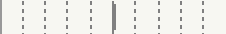
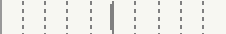
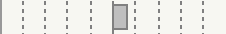
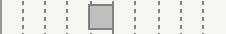
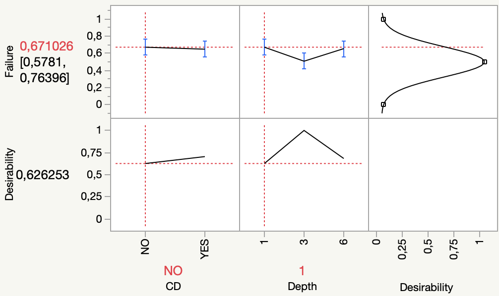

Response Failure
Effect Summary
| Source | LogWorth | | PValue |
|---|
| Depth | 2,041 |
| 0,00911 |
| CD | 0,202 |
| 0,62739 |
Lack Of Fit
| Source | DF | Sum of Squares | Mean Square | F Ratio |
|---|
| Lack Of Fit | 2 | 0,079573 | 0,039787 | 0,1674 |
| Pure Error | 414 | 98,415190 | 0,237718 | Prob > F |
| Total Error | 416 | 98,494763 | | 0,8459 |
| | | | Max RSq |
| | | | 0,0237 |
Parameter Estimates
| Term | Estimate | Std Error | t Ratio | Prob>|t| |
|---|
| Intercept | 0,5995566 | 0,023744 | 25,25 | <,0001* |
| CD[NO] | 0,0115338 | 0,023743 | 0,49 | 0,6274 |
| Depth[1] | 0,0599361 | 0,033518 | 1,79 | 0,0745 |
| Depth[3] | -0,103237 | 0,033638 | -3,07 | 0,0023* |
Effect Tests
| Source | Nparm | DF | Sum of Squares | F Ratio | Prob > F |
|---|
| CD | 1 | 1 | 0,0558699 | 0,2360 | 0,6274 |
| Depth | 2 | 2 | 2,2503785 | 4,7523 | 0,0091* |
Effect Details
CD
Least Squares Means Table
| Level | Least Sq Mean | Std Error | Mean |
|---|
| NO | 0,61109035 | 0,03349836 | 0,611374 |
| YES | 0,58802279 | 0,03365827 | 0,588517 |
Depth
Least Squares Means Table
| Level | Least Sq Mean | Std Error | Mean |
|---|
| 1 | 0,65949267 | 0,04097831 | 0,659574 |
| 3 | 0,49631990 | 0,04127207 | 0,496403 |
| 6 | 0,64285714 | 0,04112405 | 0,642857 |
Scaled Estimates
Nominal factors expanded to all levels
| Term | Scaled Estimate | | Std Error | t Ratio | Prob>|t| |
|---|
| Intercept | 0,5995566 |
| 0,023744 | 25,25 | <,0001* |
| CD[NO] | 0,0115338 | 
| 0,023743 | 0,49 | 0,6274 |
| CD[YES] | -0,011534 | 
| 0,023743 | -0,49 | 0,6274 |
| Depth[1] | 0,0599361 | 
| 0,033518 | 1,79 | 0,0745 |
| Depth[3] | -0,103237 | 
| 0,033638 | -3,07 | 0,0023* |
| Depth[6] | 0,0433006 | 
| 0,033578 | 1,29 | 0,1979 |
Prediction Profiler

Effect Screening
Using estimates standardized to have equal variances
Using estimates orthogonalized to be uncorrelated
| Lenth PSE |
|---|
| t-Test Scale | 0,5806472 |
| Coded Scale | 0,0137863 |
Each Orthog Estimate is conditioned on the effects before it
Correlations of Estimates
Correlation
| Intercept | 1,0000 | -0,0048 | -0,0050 | 0,0051 |
| CD[NO] | -0,0048 | 1,0000 | -0,0017 | -0,0017 |
| Depth[1] | -0,0050 | -0,0017 | 1,0000 | -0,5000 |
| Depth[3] | 0,0051 | -0,0017 | -0,5000 | 1,0000 |
Transformation to make uncorrelated
Transformation
| Intercept | 42,1177 | 0,20056 | 0,10028 | -0,1003 |
| CD[NO] | 0 | 42,1172 | 0,0998 | 0,10076 |
| Depth[1] | 0 | 0 | 34,45 | 17,164 |
| Depth[3] | 0 | 0 | 0 | 29,728 |
Multiple Comparisons for CD
Least Squares Means Estimates
| CD | Estimate | Std Error | DF | Lower 95% | Upper 95% | Arithmetic Mean Estimate |
|---|
| NO | 0,61109035 | 0,03349836 | 416 | 0,54524319 | 0,67693751 | 0,61137441 |
| YES | 0,58802279 | 0,03365827 | 416 | 0,52186131 | 0,65418427 | 0,58851675 |
Multiple Comparisons for Depth
Least Squares Means Estimates
| Depth | Estimate | Std Error | DF | Lower 95% | Upper 95% | Arithmetic Mean Estimate |
|---|
| 1 | 0,65949267 | 0,04097831 | 416 | 0,57894231 | 0,74004303 | 0,65957447 |
| 3 | 0,49631990 | 0,04127207 | 416 | 0,41519210 | 0,57744770 | 0,49640288 |
| 6 | 0,64285714 | 0,04112405 | 416 | 0,56202030 | 0,72369399 | 0,64285714 |